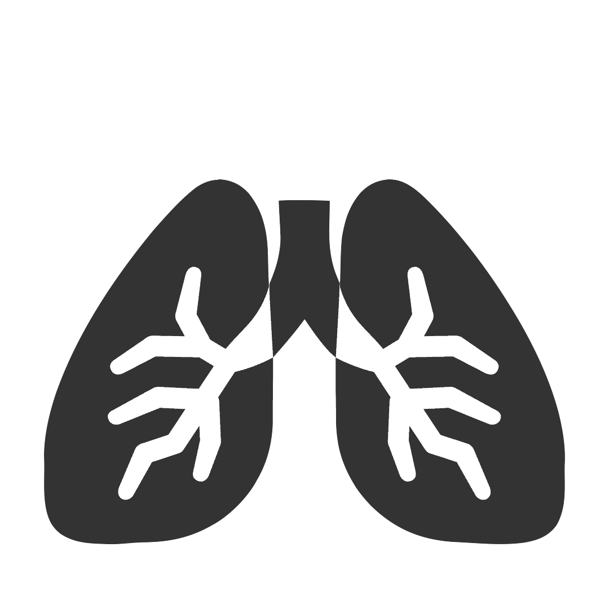

Volver página principal

DIAGNOSTICO DE LA NEUMONIA
Clasificación de imágenes (Normal o Persona enferma) usando redes neuronales convolucionales
Revisa el siguiente video para conocer más sobre sobre el tema
López Camus Ivan
Alumno de la Universidad Nacional Mayor De San Marcos (UNMSM)